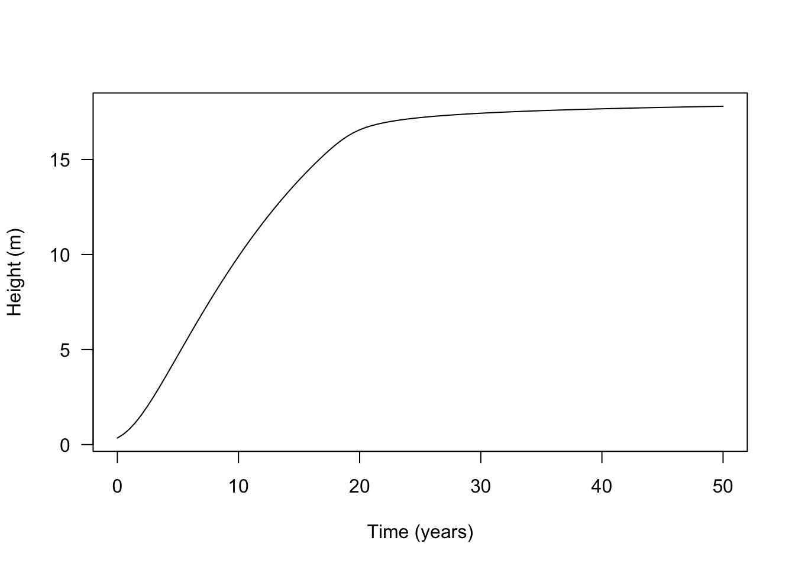

library(plant)Your first individual
guide
This guide begins with the smallest unit in plant: one individual. You will create a plant, inspect its current state, calculate how quickly that state is changing, and grow it through time. You will then compare plants with different traits under different light conditions.
We use the FF16 model throughout. Its strategy stores the biological parameters for a type of plant; an individual is one plant governed by that strategy. Patch simulations later group individuals of similar age into nodes and allow them to compete, but those extra layers are not needed yet.
Create an individual
FF16_Individual() creates an individual with the default FF16 strategy. You can also pass it an FF16 strategy with different parameter values. Other model families have matching constructors, such as TF24_Individual().
indv <- FF16_Individual()Printing the object shows the methods and values available on it:
indv<Individual<FF16,FF16_Env>>
Inherits from: <Individual>
Public:
.ptr: externalptr
aux: function (name)
aux_names: active binding
aux_size: active binding
clone: function (deep = FALSE)
compute_competition: function (h)
compute_rates: function (environment)
establishment_probability: function (environment)
initialize: function (ptr)
internals: active binding
mortality_probability: active binding
net_mass_production_dt: function (environment)
ode_names: active binding
ode_rates: active binding
ode_size: active binding
ode_state: active binding
rate: function (name)
reset_mortality: function ()
resource_compensation_point: function ()
set_initial_states: function (environment)
set_state: function (name, v)
state: function (name)
strategy: active binding
strategy_name: active bindingThe most useful starting point is state(), which reads the current value of a state variable. set_state() changes a value directly:
indv$state("height")[1] 0.3441948indv$set_state("height", 10)
indv$state("height")[1] 10indv$state("fecundity")[1] 0indv$state("mortality")[1] 0Height is the individual’s current size. Fecundity and mortality are cumulative states: they record reproductive output and mortality hazard along the trajectory. The numerical solver advances these variables together:
indv$ode_state[1] 10 0 0 0 0Reading a state tells us where the plant is now. To calculate what happens next, the model also needs an environment. FF16 describes light using canopy openness, from 0 for no available light to 1 for full light. The helper below creates a fixed environment with the same openness at every height. The individual does not alter this demonstration environment.
fixed_environment <- function(e = 1.0, height_max = 150.0) {
env <- Environment("FF16")
env$set_fixed_environment(e, height_max)
env
}
env <- fixed_environment(1.0)compute_rates() evaluates the plant’s carbon budget in that environment and updates the instantaneous rates of change. The first printout below contains the initial placeholders; the second contains rates calculated in full light:
indv$ode_rates[1] NA NA NA NA NAindv$compute_rates(env)
indv$ode_rates[1] 9.231625e-01 1.002618e-02 6.905594e-05 3.132290e-04 1.687620e+00FF16 advances five state variables in total. Their names and current rates are available directly:
indv$ode_names[1] "height" "mortality" "fecundity" "area_heartwood"
[5] "mass_heartwood"To retrieve one rate by name, use rate():
indv$rate("height")[1] 0.9231625Individuals are R6 reference objects. Assigning an individual to a new name does not make an independent copy: both names still point to the same underlying object.
indv2 <- indv
indv2$set_state("height", 1)
indv2$state("height")[1] 1indv$state("height") # also 1![1] 1This behaviour matters when saving or comparing individuals. If you need two independent plants, construct two objects rather than assigning one to another name.
Grow an individual
Setting height directly changes only one state. Normally we want to integrate all states together so that height, fecundity, mortality, and tissue turnover describe the same history. grow_individual_to_time() provides the simplest route. Here we request 101 points over 50 years:
tt <- seq(0, 50, length.out = 101)
res <- grow_individual_to_time(FF16_Individual(), tt, env)The returned state matrix has one row per requested time and one column per state variable. Plotting height gives the growth trajectory:
plot(height ~ tt, res$state, type = "l", las = 1,
xlab = "Time (years)", ylab = "Height (m)")
Under the hood: integrating the equations directly
Most users can skip this subsection. It demonstrates that the individual’s states and rates can also be passed to a general-purpose ODE solver such as deSolve:
# deSolve wrapper of Individual ODEs
derivs <- function(t, y, individual, env) {
individual$ode_state <- y
individual$compute_rates(env)
list(individual$ode_rates)
}
# initialise the individual and its starting state
indv <- FF16_Individual()
y0 <- setNames(indv$ode_state, indv$ode_names)
# solve and plot
yy <- deSolve::lsoda(y0, tt, derivs, indv, env=env)
plot(height ~ time, yy, type="l")
The grey points from deSolve lie on the trajectory returned by plant’s helper, confirming that both approaches integrate the same equations:
plot(height ~ tt, res$state, type="l", las=1,
xlab="Time (years)", ylab="Height (m)")
points(height ~ time, yy, col="grey", cex=.5)
Grow to a target size
Sometimes the question is not “How large is the plant after 20 years?” but “When does it reach 15 metres?” grow_individual_to_size() integrates until a sequence of target sizes is reached. grow_individual_to_height() is a convenient height-specific wrapper.
# create a sequence from the initial size to height at maturity
indv <- FF16_Individual()
heights <- seq(indv$state("height"), indv$strategy$pars$hmat, length.out=20)
res <- grow_individual_to_size(indv, heights, "height", env)The result contains the time at which each height was reached,
res$time [1] 0.000000 1.545681 2.523393 3.365033 4.155087 4.926508 5.696593
[8] 6.476387 7.274127 8.096757 8.950785 9.842785 10.779771 11.769706
[15] 12.821689 13.946774 15.158668 16.476692 17.957500 20.137320the complete state at each of those times,
head(res$state) height mortality fecundity area_heartwood mass_heartwood
[1,] 0.3441948 0.00000000 0.000000e+00 0.000000e+00 0.000000e+00
[2,] 1.1995465 0.01545682 7.754892e-20 1.280271e-07 6.544158e-05
[3,] 2.0548958 0.02523396 5.654090e-18 9.826615e-07 8.617440e-04
[4,] 2.9102485 0.03365038 2.253268e-16 3.837305e-06 4.790943e-03
[5,] 3.7656006 0.04155098 6.750303e-15 1.081677e-05 1.755419e-02
[6,] 4.6209512 0.04926531 1.710477e-13 2.510437e-05 5.019027e-02and an individual object for each target. Here the tenth object has the tenth requested height:
res$individual[[10]]<Individual<FF16,FF16_Env>>
Inherits from: <Individual>
Public:
.ptr: externalptr
aux: function (name)
aux_names: active binding
aux_size: active binding
clone: function (deep = FALSE)
compute_competition: function (h)
compute_rates: function (environment)
establishment_probability: function (environment)
initialize: function (ptr)
internals: active binding
mortality_probability: active binding
net_mass_production_dt: function (environment)
ode_names: active binding
ode_rates: active binding
ode_size: active binding
ode_state: active binding
rate: function (name)
reset_mortality: function ()
resource_compensation_point: function ()
set_initial_states: function (environment)
set_state: function (name, v)
state: function (name)
strategy: active binding
strategy_name: active bindingres$individual[[10]]$state("height")[1] 8.042356heights[[10]][1] 8.042356Compare traits and environments
We can now ask a biological question: how do leaf traits change a plant’s growth trajectory? We compare two FF16 strategies that differ in leaf mass per area (LMA). Low LMA describes thinner, cheaper leaves; high LMA describes thicker, more expensive leaves.
Changing LMA through a trait matrix also updates linked parameters such as leaf turnover and respiration. This is called hyperparameterisation. The Strategies and traits guide explains the machinery in more detail; here we focus on the resulting plants.
Begin with the default FF16 parameters:
params <- scm_base_parameters("FF16")Generate one low-LMA and one high-LMA strategy. param_hyperpar() selects the appropriate linking rules for the model stored in params:
s <- generate_strategy(params, trait_matrix(c(0.0825, 0.2625), "lma"),
birth_rate = 1)
s1 <- s[[1]]
s2 <- s[[2]]The resulting strategies show how LMA is linked to leaf turnover (k_l) and dark respiration per unit leaf mass (r_l):
lapply(s, function(x) x$pars[c("lma", "k_l", "r_l")])[[1]]
[[1]]$lma
[1] 0.0825
[[1]]$k_l
[1] 2.03812
[[1]]$r_l
[1] 476
[[2]]
[[2]]$lma
[1] 0.2625
[[2]]$k_l
[1] 0.2816144
[[2]]$r_l
[1] 149.6Create one individual from each strategy:
indv1 <- FF16_Individual(s1)
indv2 <- FF16_Individual(s2)We grow each individual through a sequence of heights. Their starting heights differ because the same seed mass produces more leaf area, and therefore a taller seedling, when LMA is lower.
heights1 <- seq(indv1$state("height"), s1$pars$hmat, length.out=100L)
heights2 <- seq(indv2$state("height"), s2$pars$hmat, length.out=100L)
dat1 <- grow_individual_to_height(indv1, heights1, env,
time_max=100, warn=FALSE, filter=TRUE)
dat2 <- grow_individual_to_height(indv2, heights2, env,
time_max=100, warn=FALSE, filter=TRUE)
plot(dat1$trajectory[, "time"], dat1$trajectory[, "height"],
type="l", lty=1,
las=1, xlab="Time (years)", ylab="Height (m)")
lines(dat2$trajectory[, "time"], dat2$trajectory[, "height"], lty=2)
legend("bottomright", c("Low LMA", "High LMA"), lty=1:2, bty="n")
Next compare the same plants at 50% canopy openness. The line type identifies the LMA strategy, while colour identifies the light environment:
env_low <- fixed_environment(0.5)
dat1_low <- grow_individual_to_height(indv1, heights1, env_low,
time_max=100, warn=FALSE, filter=TRUE)
dat2_low <- grow_individual_to_height(indv2, heights2, env_low,
time_max=100, warn=FALSE, filter=TRUE)
cols <- c("black", "#e34a33")
plot(dat1$trajectory[, "time"], dat1$trajectory[, "height"],
type="l", lty=1,
las=1, xlab="Time (years)", ylab="Height (m)")
lines(dat2$trajectory[, "time"], dat2$trajectory[, "height"], lty=2)
lines(dat1_low$trajectory[, "time"], dat1_low$trajectory[, "height"],
lty=1, col=cols[[2]])
lines(dat2_low$trajectory[, "time"], dat2_low$trajectory[, "height"],
lty=2, col=cols[[2]])
legend("bottomright",
c("High light", "Low light"), lty=1, col=cols,
bty="n")
Inspect growth rates
Height growth rate is the slope of a height-through-time trajectory. The solver integrates this rate to obtain height, so inspecting it helps explain why the four trajectories diverge.
Select an individual from part-way through the low-LMA, high-light run:
indv <- dat1$individual[[50]]Its ODE state records where the individual is,
setNames(indv$ode_state, indv$ode_names) height mortality fecundity area_heartwood mass_heartwood
8.412120e+00 7.797210e-02 9.998969e-08 3.403727e-04 1.262008e+00 while the ODE rates record how those states are changing:
setNames(indv$ode_rates, indv$ode_names) height mortality fecundity area_heartwood mass_heartwood
9.530474e-01 1.003019e-02 3.243850e-07 1.780143e-04 8.068135e-01 An individual saved from a trajectory may retain rates from the solver’s last internal evaluation. Recompute them in the environment before interpreting them:
indv$compute_rates(dat1$env)
setNames(indv$ode_rates, indv$ode_names) height mortality fecundity area_heartwood mass_heartwood
9.530474e-01 1.003019e-02 3.243850e-07 1.780143e-04 8.068135e-01 They happen to be unchanged here because the demonstration environment is constant. That need not be true with a varying environment.
The named accessor and the first entry of ode_rates return the same height growth rate:
indv$rate("height")[1] 0.9530474indv$ode_rates[[1]][1] 0.9530474Collecting that rate across all four trajectories shows how growth changes with time, trait value, and light:
f <- function(x) x$rate("height")
dhdt1 <- sapply(dat1$individual, f)
dhdt2 <- sapply(dat2$individual, f)
dhdt1_low <- sapply(dat1_low$individual, f)
dhdt2_low <- sapply(dat2_low$individual, f)
plot(dat1$time, dhdt1, type="l", lty=1,
las=1, xlab="Time (years)", ylab="Height growth rate (m / yr)")
lines(dat2$time, dhdt2, lty=2)
lines(dat1_low$time, dhdt1_low, lty=1, col=cols[[2]])
lines(dat2_low$time, dhdt2_low, lty=2, col=cols[[2]])
legend("topright",
c("High light", "Low light"), lty=1, col=cols,
bty="n")
Plotting the same rates against height separates the effect of plant size from the passage of time:
ylim <- c(0, max(dhdt1))
plot(dat1$state[, "height"], dhdt1, type="l", lty=1,
las=1, xlab="Height (m)", ylab="Height growth rate (m / yr)", ylim=ylim)
lines(dat2$state[, "height"], dhdt2, lty=2)
lines(dat1_low$state[, "height"], dhdt1_low, lty=1, col=cols[[2]])
lines(dat2_low$state[, "height"], dhdt2_low, lty=2, col=cols[[2]])
legend("topright",
c("High light", "Low light"), lty=1, col=cols,
bty="n")
Find the light compensation point
For a plant of a fixed size, lower canopy openness reduces height growth:
indv <- FF16_Individual()
indv$set_state("height", 10)
indv$compute_rates(fixed_environment(1.0))
indv$rate("height") # in full light[1] 0.9231625indv$compute_rates(fixed_environment(0.5))
indv$rate("height") # in 1/2 light[1] 0.4522332At sufficiently low light, the individual cannot maintain a positive carbon balance. For this 10 m plant, height growth has stopped by 25% canopy openness:
indv$compute_rates(fixed_environment(0.25))
indv$rate("height")[1] 0The canopy openness at which whole-plant carbon gain reaches zero is the whole-plant light compensation point.
openness <- seq(0, 1, length.out=51)
lcp <- indv$resource_compensation_point()Above this point, height growth increases with canopy openness and gradually approaches a plateau:
f <- function(x, indv) {
env <- fixed_environment(x)
indv$compute_rates(env)
indv$rate("height")
}
x <- c(lcp, openness[openness > lcp])
plot(x, sapply(x, f, indv), type="l", xlim=c(0, 1),
las=1, xlab="Canopy openness", ylab="Height growth rate (m / yr)")
points(lcp, 0.0, pch=19)
The compensation point is not a single constant for a strategy: it also changes with plant size. The next plot compares a seedling with a larger individual set to half its maximum height (hmat / 2). The helper g() evaluates both plants across the same openness sequence:
g <- function(openness, indv) cbind(openness, sapply(openness, f, indv))
indv_seed <- FF16_Individual(s1)
y_seed <- g(openness, indv_seed)
indv_adult <- FF16_Individual(s1)
indv_adult$set_state("height", indv_adult$strategy$pars$hmat / 2)
y_adult <- g(openness, indv_adult)
cols_height <- c("#31a354", "black")
ymax <- max(y_seed[, 2], y_adult[, 2])
plot(y_seed, type="l", col=cols_height[[1]],
xlim=c(0, 1), ylim=c(0, ymax), las=1,
xlab="Canopy openness", ylab="Height growth rate (m / yr)")
lines(y_adult, col=cols_height[[2]])
legend("bottomright", c("Seedling", "Larger individual"), lty=1, col=cols_height, bty="n")
The compensation point and curve also vary with traits. Here we overlay the high-LMA species s2 (dotted) on the low-LMA species s1 (solid):
indv2_seed <- FF16_Individual(s2)
y2_seed <- g(openness, indv2_seed)
indv2_adult <- FF16_Individual(s2)
indv2_adult$set_state("height", indv2_adult$strategy$pars$hmat / 2)
y2_adult <- g(openness, indv2_adult)
ymax <- max(ymax, y2_seed[, 2], y2_adult[, 2])
plot(y_seed, type="l", col=cols_height[[1]],
xlim=c(0, 1), ylim=c(0, ymax), las=1,
xlab="Canopy openness", ylab="Height growth rate (m / yr)")
lines(y_adult, col=cols_height[[2]])
lines(y2_seed, col=cols_height[[1]], lty=2)
lines(y2_adult, col=cols_height[[2]], lty=2)
legend("bottomright", c("Seedling", "Larger individual"), lty=1, col=cols_height, bty="n")
In this example, the high-LMA strategy has the lower growth rate at most light levels as a seedling but the higher rate across all light levels at the larger size. Traits, size, and environment therefore interact: none of these inputs alone determines the growth trajectory.